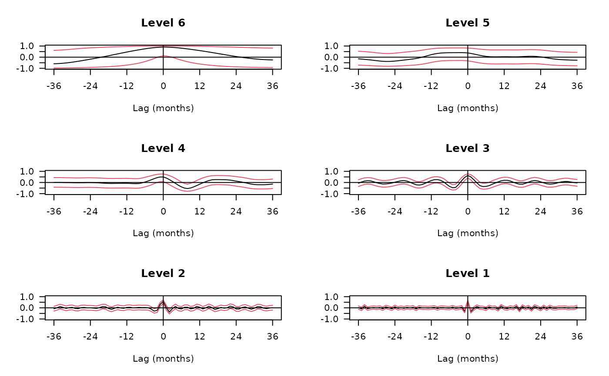

spin.covariance.RdComputes wavelet cross-covariance or cross-correlation between two time series.
spin.covariance(x, y, lag.max = NA)
spin.correlation(x, y, lag.max = NA)| x | first time series |
|---|---|
| y | second time series, same length as |
| lag.max | maximum lag to compute cross-covariance (correlation) |
List structure holding the wavelet cross-covariances (correlations) according to scale.
See references.
Gencay, R., F. Selcuk and B. Whitcher (2001) An Introduction to Wavelets and Other Filtering Methods in Finance and Economics, Academic Press.
Whitcher, B., P. Guttorp and D. B. Percival (2000) Wavelet analysis of covariance with application to atmospheric time series, Journal of Geophysical Research, 105, No. D11, 14,941-14,962.
B. Whitcher
## Figure 7.9 from Gencay, Selcuk and Whitcher (2001)
data(exchange)
returns <- diff(log(exchange))
returns <- ts(returns, start=1970, freq=12)
wf <- "d4"
demusd.modwt <- modwt(returns[,"DEM.USD"], wf, 8)
demusd.modwt.bw <- brick.wall(demusd.modwt, wf)
jpyusd.modwt <- modwt(returns[,"JPY.USD"], wf, 8)
jpyusd.modwt.bw <- brick.wall(jpyusd.modwt, wf)
n <- dim(returns)[1]
J <- 6
lmax <- 36
returns.cross.cor <- NULL
for(i in 1:J) {
blah <- spin.correlation(demusd.modwt.bw[[i]], jpyusd.modwt.bw[[i]], lmax)
returns.cross.cor <- cbind(returns.cross.cor, blah)
}
returns.cross.cor <- ts(as.matrix(returns.cross.cor), start=-36, freq=1)
dimnames(returns.cross.cor) <- list(NULL, paste("Level", 1:J))
lags <- length(-lmax:lmax)
lower.ci <- tanh(atanh(returns.cross.cor) - qnorm(0.975) /
sqrt(matrix(trunc(n/2^(1:J)), nrow=lags, ncol=J, byrow=TRUE)
- 3))
upper.ci <- tanh(atanh(returns.cross.cor) + qnorm(0.975) /
sqrt(matrix(trunc(n/2^(1:J)), nrow=lags, ncol=J, byrow=TRUE)
- 3))
par(mfrow=c(3,2), las=1, pty="m", mar=c(5,4,4,2)+.1)
for(i in J:1) {
plot(returns.cross.cor[,i], ylim=c(-1,1), xaxt="n", xlab="Lag (months)",
ylab="", main=dimnames(returns.cross.cor)[[2]][i])
axis(side=1, at=seq(-36, 36, by=12))
lines(lower.ci[,i], lty=1, col=2)
lines(upper.ci[,i], lty=1, col=2)
abline(h=0,v=0)
}
